ARC – the network for community foundations
https://fundatiicomunitare.ro/fundatii-comunitare
Contact:
See also:
Nominated by
Wire Transfer Info:
Name on the account: Asociația pentru Relații Comunitare
IBAN USD
RO14 BTRL 0130 2205 9865 58XX
SWIFT: BTRLRO22
Banca Transilvania
Banks address: P-ta Mihai Viteazu nr. 29, Cluj-Napoca 400027
See also:
Brief Fondul Speranta pentru Ucraina de coordonare a consortiului organizatiilor sociale si de tineret din Romania:
Documents
I think this particular effort of ARC and other partners is essential for developing Romanian civil
society at local level throughout the country and not only in big urban centers. Community
foundations have such a big potential of bringing back hope and empowerment in maybe otherwise
resigned communities. They have the unique advantage of being very close to local authorities as
well, which increases their chances of generating community change in partnership with them.
Community foundations also increase the empowerment level of the communities, as people
decided themselves what they want to focus on, how they get there, what they donate for, etc. They are a very useful tool for (re)building the social capital in these communities and the country.
I don’t have a contact person here, probably easiest to contact ARC directly
See also:
Participants
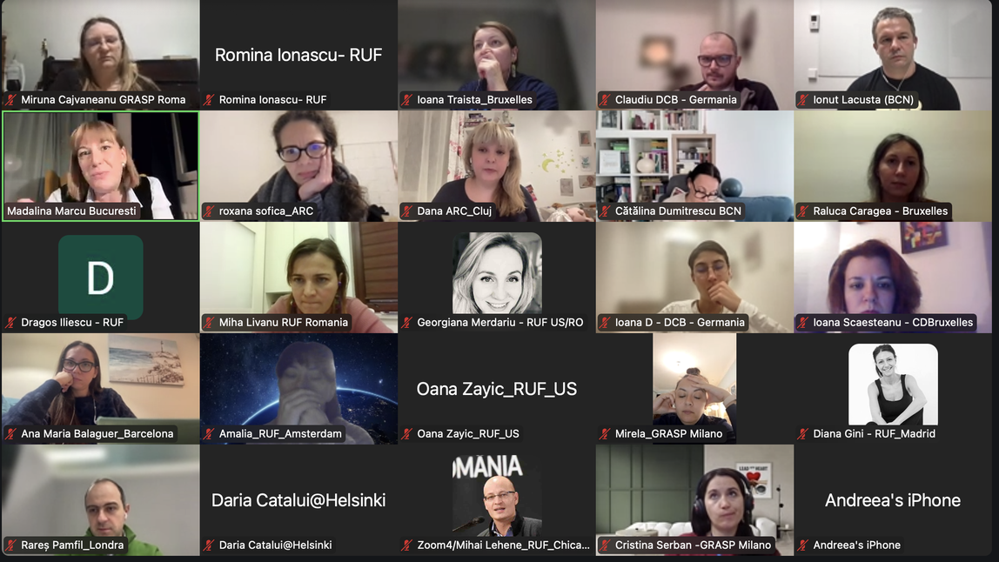
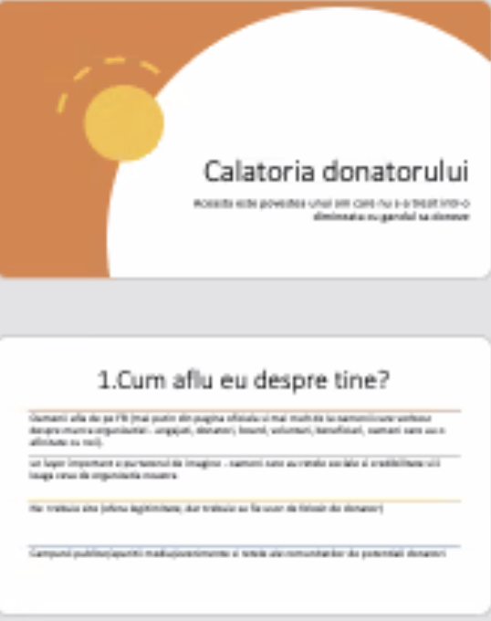
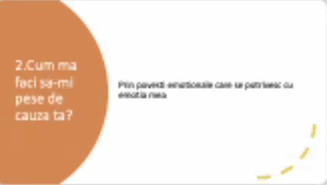
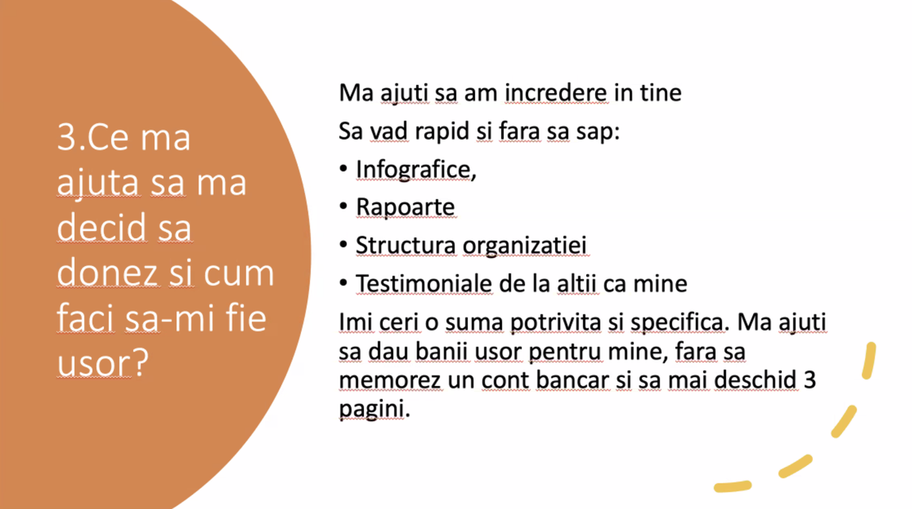
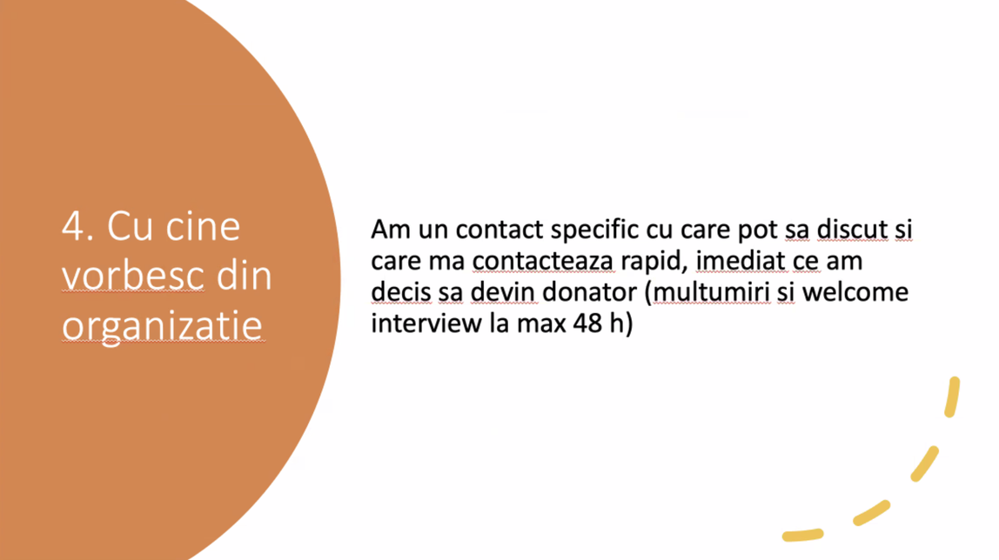
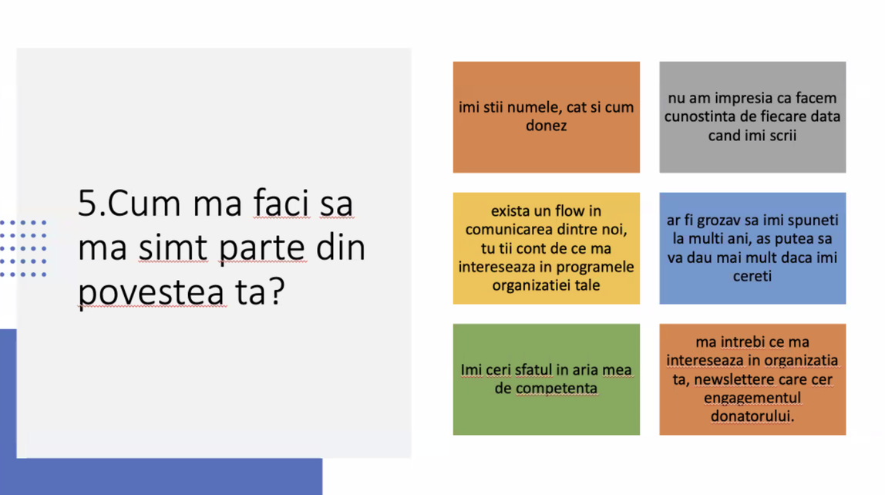
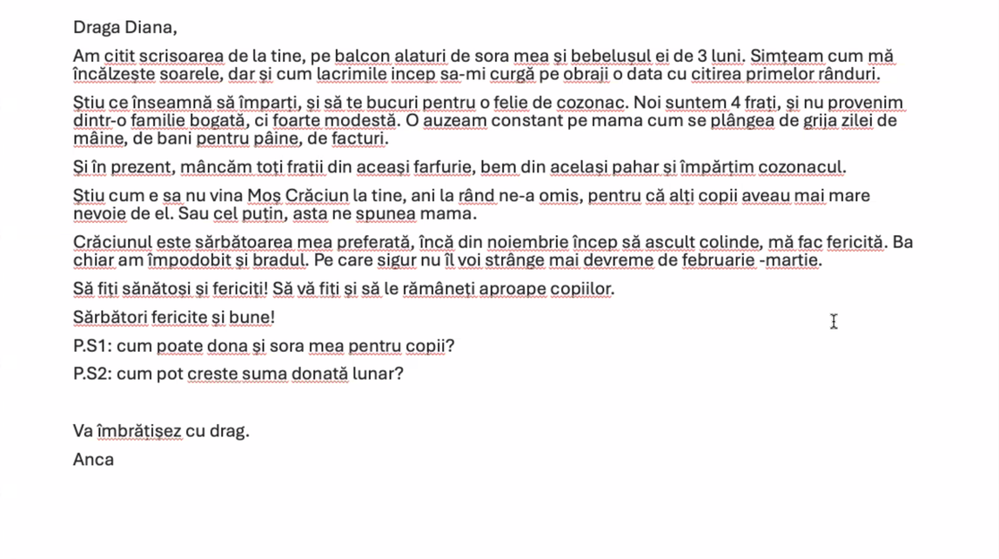
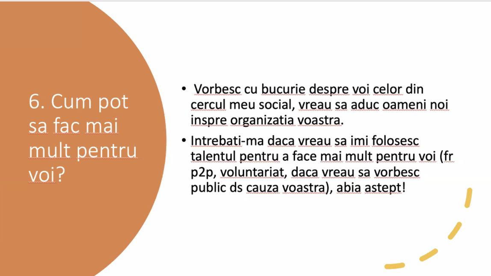
Examples: Emotions behind a fundraising campaign
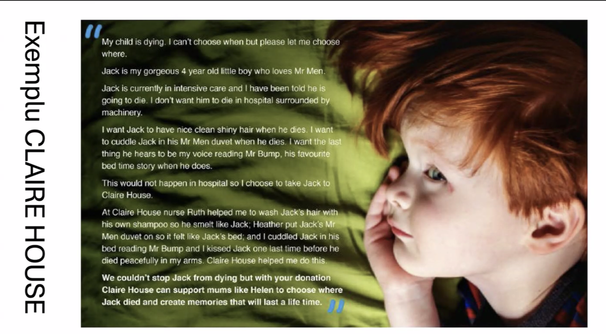
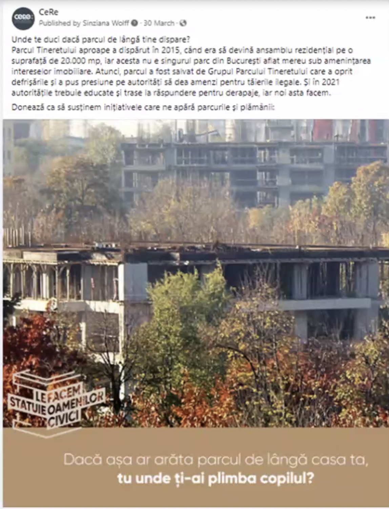
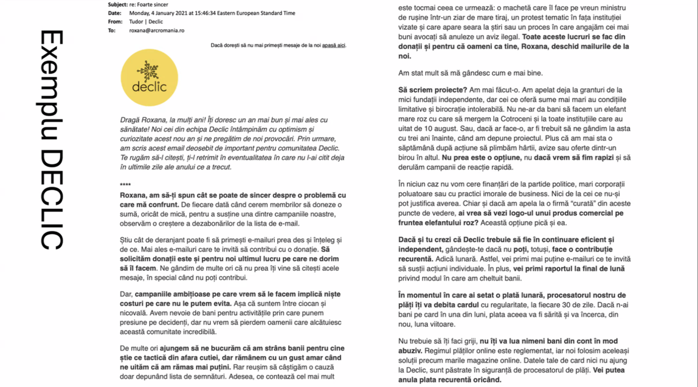
Events for Fundraising (Think of it like organizing a wedding):
What Makes an Event Special?
Peer to Peer Fundraising:
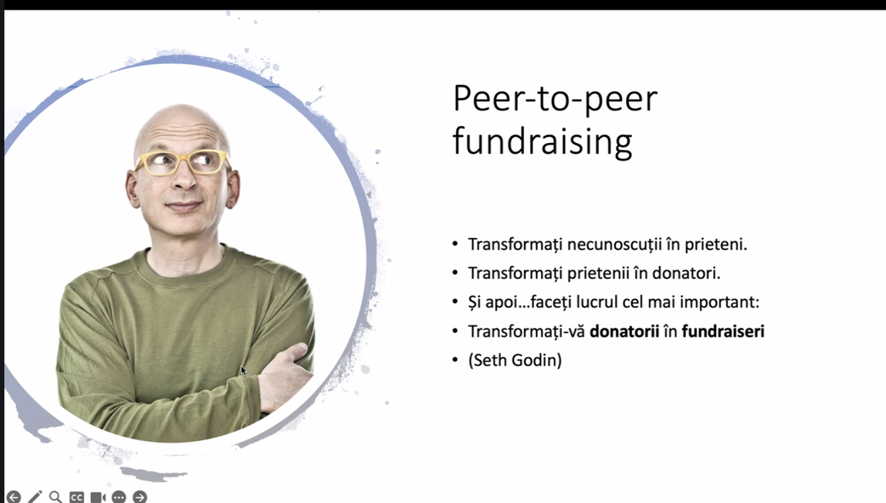
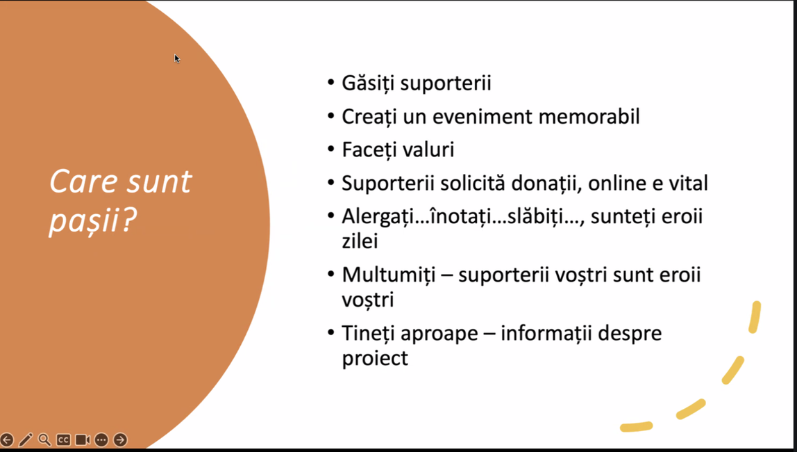
Link for WhatsApp Group: https://chat.whatsapp.com/Ixw0axjtPih85ZQ1URJ6x
Letter of recommendation:
Since our very beginning in 2002, we believed that the well being of a country depends on the prosperity of local communities. For communities to thrive, philanthropy plays a crucial role. Not only does it unite locals people together and strengthen the sense of belonging, but it also shows them that no matter its size, or economic power, a community has plenty of untapped resources. We taught nongovernmental organizations how to attract more funds; we helped companies and donors to look at their donations as long-term investments in the community, and we built an infrastructure that strengthened the philanthropic behavior.
In 2005, we started working on a theory of change for local communities. In order to have a better future, communities need a new generation of leaders, who know how to connect people, build on existing local resources, and empower those local heroes and initiatives that have a vision for their community. As a support organization, we started mapping communities in search of these informal leaders and grassroots movements. Then, we started offering support for the building of community foundations. In 2008, the people from Cluj-Napoca and Odorheiu-Secuiesc established the very first community foundations. It was an exercise, which proved to us that there is an untouched reservoir of civic engagement, commitment and resources in the community. We just have to discover it.
We are in the first half of 2019, and in the last ten years, 14 more community foundations have been established through our program, and four more will appear on the map by the end of this year. It has been an incredible journey for our team, and although we played a crucial part in their evolution, we don’t see these foundations as ARC projects, but rather we see them as community projects. All we do is help them find their own voice and priorities. Almost half of the country’s population now access to the services provided by community foundations, and their services and programs are as diverse as the communities they represent and mirrors the community it belongs to. As different as they are, all of them fulfill these three roles: they are local grant-makers, philanthropy developers, and serve as community leaders.
This article follows the story of community foundations practices and ARC’s contribution along the way in the 15 years of continuous support to the development of this field.
Grant-maker for change
Community foundations have positioned themselves in the non-profit environment as pioneers of local grant-making and have demonstrated that they can play the role of social binder. A foundation brings together non-governmental organizations, but also donors, individuals or companies, as well as people who have an initiative but no organizational backing. Since 2008, until 2017, $5,2 millions were invested in the community, in various forms, from grants (almost 75%), scholarships, to medical cases or donations.
A community foundation makes people start to believe in what they do, and in turn, believe in other people until the entire social dynamics are transformed. The foundations understand that grant-making is not a tool for redistributing money, rather, it’s a tool that empowers: it’s the spark that makes the engine start. They share the same principles as ARC Romania and have this principle embedded in their work. They support local organizations not because they are “safe investments”, but because they are committed to improving the lives of their community. For example, CF Bucharest helped the Văcăreşti Natural Park Association to jump-start their project in protecting the first urban delta, a park that has naturally appeared in a deserted lake in Bucharest. “We couldn’t offer them all the money they needed, but the fact that we helped them then, motivated them to attract more funding,” says Alina Kasprovski, executive director of CF Bucharest.
Empowerer
A key role we play as a support organization is to help community foundations articulate their vision and build their resources, and we see this wonderful domino effect: they take what they cherish from our relationship, customize it to their needs, and apply it to their own relations with local NGOs and community initiatives. We are the support organization that offers them a General Purpose grant for two years after they’ve established themselves as community foundations. This ensures that they can be mature about their approach and practice; they can test different methods of working with and for the community as well as invest funds to mobilize local resources for supporting local initiatives and their own development.
After receiving a 2-year general-purpose grant from our organization, CF Timișoara team developed its own funds to support the local grassroots organizations who are at the beginning of the road. “The GP Grant made us aware of how vital it is for an organization in its incipient existence to be guided in building a strategy and for it to be accompanied by a flexible financial support,” said Daniela Chesaru, the executive director of the CF. This year, they launched the FACEM fund, which will support grassroots initiatives in areas like environment and cultural heritage.
Each foundation is an island of its own, with its own daily victories and struggles. ARC’s commitment is to give them an opportunity to become an archipelago. We organize numerous events where we share our experiences, learn from their practices and work together to create common projects.
Supporting Leadership in the Community
The foundations we work with assume a leadership role in the community. They bring public attention to community needs, promote partnerships, but also help communities problem solve in a collaborative way. For example CF Prahova worked with OMV Petrom – the biggest Petrol and Gas Company from Romania – to create a fund through which local initiatives receive support for a long-term change in the community. This fund helped a group of citizens to form a small producers organization in order to sell their renowned raspberry.
Another example, CF Țara Făgărașului wants to tackle one of the biggest problems affecting the country: emigration. Romania has the highest rate of people leaving the country (around 3,4 million people left the country since it joined the EU in 2007), and this foundation created the “Țara Făgărașului is home” fund, to involve the diaspora in changing the community.
CF Bucharest has worked on developing an “earthquake fund” for its community. The Romanian capital is an earthquake vulnerable city, and the devastating damage left by the 1977 earthquake still sends shivers among the inhabitants of the city. Nevertheless, the city has no contingency plan and the population is not prepared for such a catastrophe. The fund is still in an early stage, but it would be used to map all the resources available to help during an emergency and other disaster-relief related activities.
The Sibiu Community Foundation is also one of the leading community philanthropy organizations that strategically fosters spaces and opportunities that give people power and a framework to re-think and reinvent their city, as a smart and sensitive city, centered around its citizens and their dreams.
These examples show us the true leadership of community foundations. They have a collaborative method of working, they bring all the actors at the same table, and they always seek a long-term change in the community.
Fundraising pioneer
Since their beginning, community foundations have shown creativity in raising funds and mobilizing local people and companies. One of the ways they have done this is through fundraising-focused sport events. The annual Swimathon, which started in 2009 in Cluj-Napoca, saw 13 community foundations bringing people together in 2018 to do sports for causes the constituents believe in. In 2018 only, fundraising sporting events have managed to support 282 local causes with more than $695,000 raised from more than 20,500 donors.
There is an incredible burst of generosity surrounding these events. We see companies that double the funds raised for a specific cause, we see supporters that organize impromptu fundraising sessions at their workplace, and donors loving a project so much that they decide to volunteer for it. “It’s a moment when energy, financial power and civic education are being invested. People understand the importance of community, of social initiatives, of solutions found together,” says Mihai Căprioară, Executive Director of Bacău Community Foundation.
Community philanthropy support organization’s role
Innovation and creative thinking are part of our organization’s DNA. As a support organization, we provide safe spaces where practitioners in the field can explore their dilemmas or test different theories. In a professional culture that still values planning and predictability, we have managed to safeguard spaces for trust, learning and adaptation.
Over the years, we have supported and experienced projects that go beyond the classic patterns of grant-making, philanthropy and community development and so do the CFs we are working with.
So what are some key roles of support organizations from our experience?
But, most importantly, we see our role in building bridges of trust. Our relationships can’t evolve in an organic way if we don’t show them we trust their visions of the community. The foundations won’t be able to accomplish their missions if they don’t create spaces for people to learn how to trust again. Trust is the glue that transforms a Brownian motion into a community.
ARC’s National Development Program for Community Foundations is supported by Charles Stewart MOTT Foundation and Romanian American Foundation.